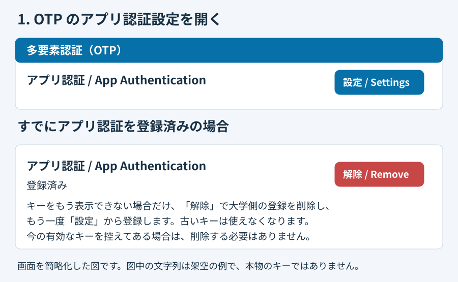
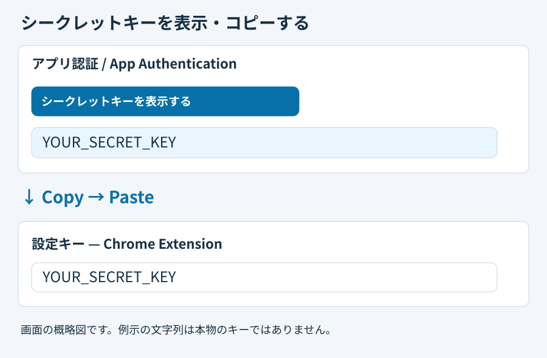
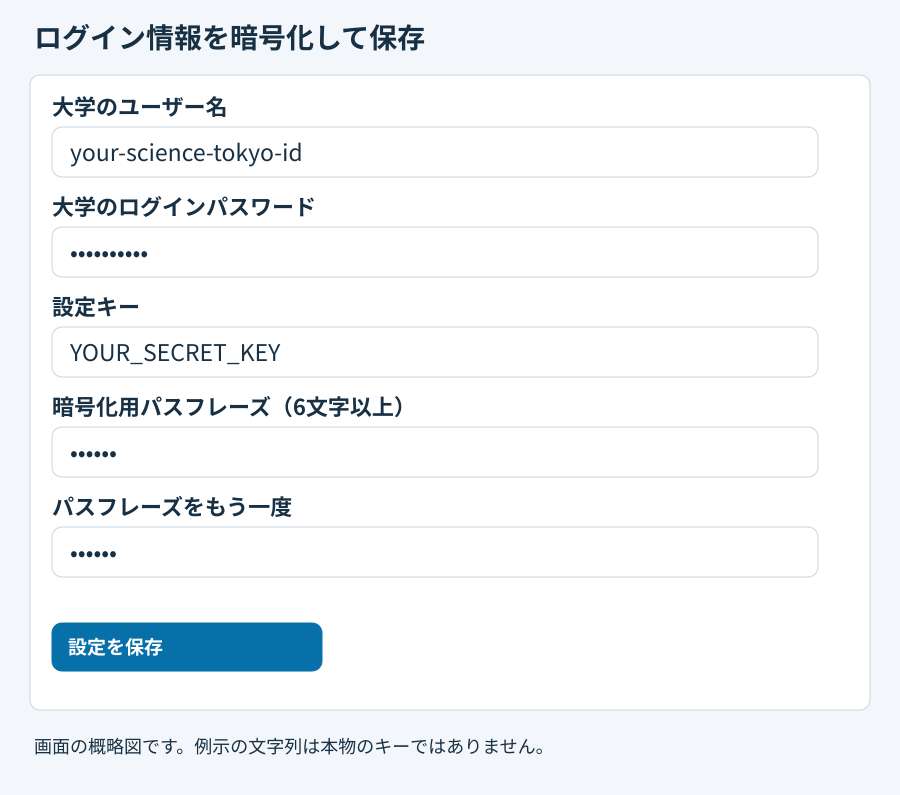

大学の認証ポータルで「多要素認証（OTP）」を開き、「アプリ認証 / App Authentication」の「設定」を押します。

画面の概略図です。例示の文字列は本物のキーではありません。「シークレットキーを表示する / Show secret key」を押します。表示された文字列をコピーして、拡張機能の「設定キー」に貼り付けます。QRの読み取りは不要です。

画面の概略図です。例示の文字列は本物のキーではありません。大学のユーザー名・大学のパスワード・6文字以上の暗号化用パスフレーズと確認欄を入力し、「設定を保存」を押します。まとめて暗号化保存します。保存済みキーにログイン情報を追加する場合は、先に解除し、設定キー欄は空のまま、現在または新しい暗号化用パスフレーズを2回入力して保存してください。

画面の概略図です。例示の文字列は本物のキーではありません。大学側の初回登録が未完了なら、拡張機能の「現在のコードを表示」で6桁を表示し、大学の「トークン」欄に入力して「設定」を押します。以後は解除してから https://isct.ex-tic.com/auth/session を開くか再読み込みすると、ユーザー名・パスワード・OTPの順に自動入力・送信します。
既にアプリ認証を使用済みでシークレットキーを再表示できない場合は、OTPの設定欄 → App Authentication（アプリ認証）→ Remove（解除）で一度削除し、再設定して新しいキーを発行する必要があります。新しく表示されたキーを拡張機能へ貼り付け、大学側の初回登録も完了してください。以前のキーは使えなくなります。現在有効なキーを控えてある場合は、そのキーを使えるため削除・再発行は不要です。